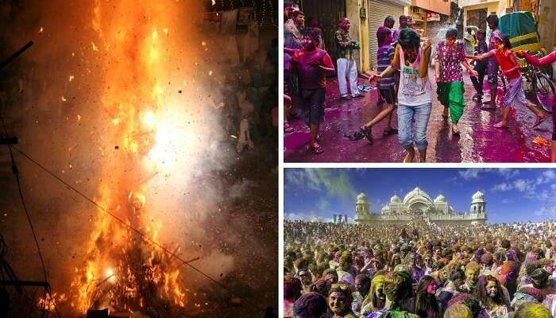

Different types of Festivals
Also known as the festival of colors, holi is one of the famous festivals of India, celebrated with a lot of fervor across the country. On the eve of Holi, people make huge Holika bonfires and sing and dance around it. On the day of Holi, the famous festival of Indian states, people gather in open areas and apply dry and wet colors of multiple hues to each other, with some carrying water guns and colored water-filled balloons. It tops the charts of 10 famous festivals in India as it is celebrated all across the world with happiness.
Significance: It signifies the victory of good (Prince Prahlad) over evil (Holika) and the arrival of spring.Key attractions: Holika bonfire, playing with colors, and bhang thandai When: Full moon (Purnima) of the Phalgun month of the Hindu lunisolar calendar, which corresponds to the month of March of the Gregorian calendar Where: Almost all over the country; most vibrant celebrations can be seen in North Indian states
Ganesh Chaturthi, another one of the important Hindu religious festivals of India , is a 10-day affair of colorful festivities. Huge handcrafted Ganesh idols are installed in homes or outdoors, in public pandals. Pujas are performed in the morning and the evening. The last day is the day of Visarjan – immersion of an idol in a water body. Cultural activities of singing, dancing, and theater, and free medical and blood donation camps are held.
It’s the birthday of Lord Ganesha, the elephant-headed God.The beautifully crafted life size idols of Ganesha, and the immersion ceremony.The 4th day of the first fortnight (Shukla Chaturthi) in the month of Bhadrapada of the Hindu lunisolar calendar, which corresponds to August or September of the Gregorian calendar
Eid is one of the major festivals of India for the Muslim community. People dress up in fineries, attend a special community prayer in the morning, visit friends, and relatives and exchange sweets. Children are given idi (money or gift) by elders.It celebrates the conclusion of the holy month of fasting called Ramadan.The beautifully decked up markets and mosques, the morning Eid namaz at the mosques, and the sweet dishes.On the 1st day of the month of Shawwal of the lunar Hijri calendar, which corresponds to July of the Gregorian calendar
The four-day long harvest festival of South India is one of the most famous festivals of India. People prepare Pongal dish and wear their traditional attire. On this famous festival of South India, celebrities include bonfires, dancing, cattle races, sweets, and savories. The houses look resplendent with Kolam designs (traditional floral designs made with rice, colored powders, and flower petals)